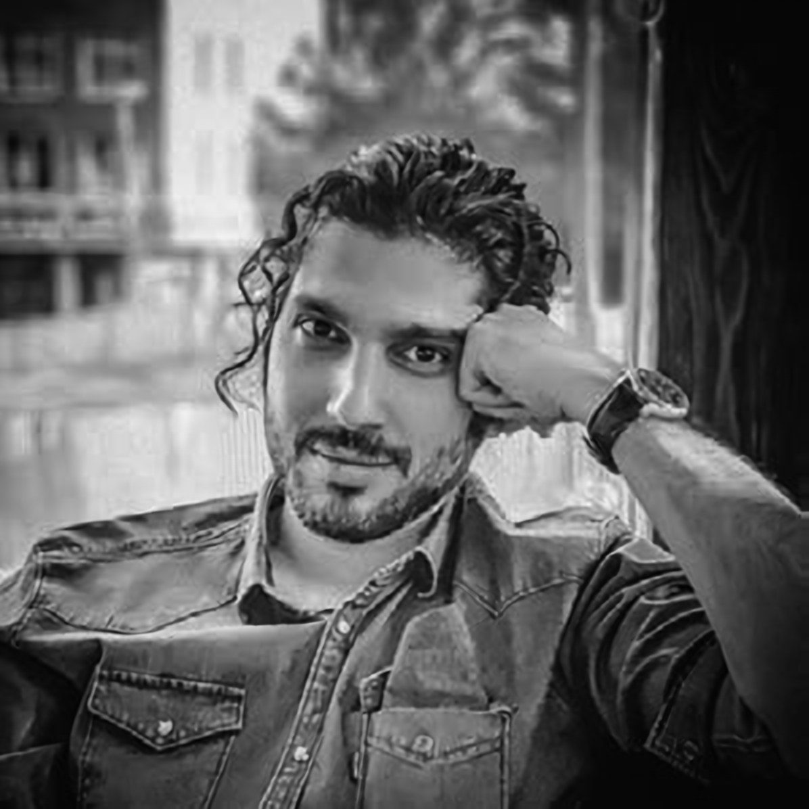
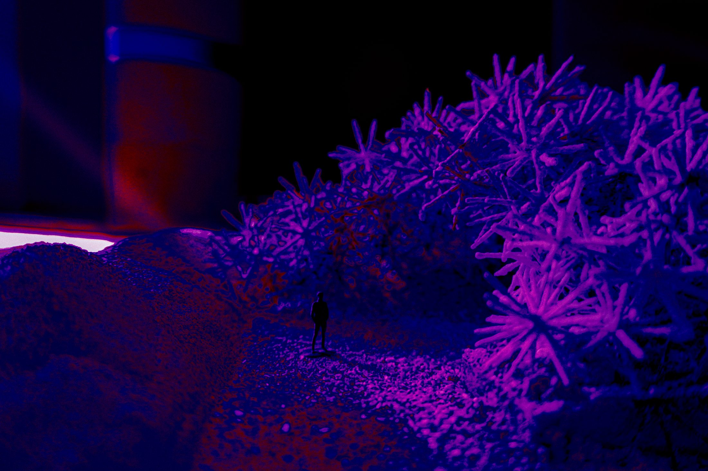

About
Mojtaba Mohammadi
My name is Mojtaba Mohammadi, an engineer, architect student and researcher. I use computational tools to learn from the way nature grows, holds itself together and finds its form, and to design buildings in which structure and form are one.

Background
I trained first as a civil engineer in Yazd, then in bionic architectural technology in Tehran, where my thesis simulated natural morphogenesis to design a bridge. I continued with building and architectural engineering at the Politecnico di Milano. I am now completing a Master of Architecture at Syracuse University in New York, where I also work as a teaching assistant in structures and as a research intern.
This site is a personal portfolio of my academic projects, research and art: university studios, competitions and workshops from Tehran and Milan to New York, along with drawings and photographs.
Structure, form and computation, designed together.
My approach
I try to design with nature, not against it. Every project starts from what the site, the climate and the material already offer, and looks for a form that does more with less. For me sustainability is not an extra layer; it is a way of respecting the place and the people who will use it.

Education
- 2025 – 2028Master of Architecture (M.Arch)Syracuse University School of Architecture, NY, USA
- 2023M.Sc. Building and Architectural EngineeringPolitecnico di Milano, Italy
- 2017 – 2020M.Sc. Bionic Architectural TechnologyPars University of Architecture and Art, Tehran · thesis: natural morphogenesis in a bridge (Dr. M. Matini, Dr. M. Rahbar)
- 2011 – 2016B.Sc. Civil EngineeringUniversity of Science and Art, Yazd
Research
- Fall 2026Research InternSyracuse University School of Architecture · Prof. Junho Chun
- Fall 2026Studio research: insect-built structuresARC 606 · insects as builders (WormFinding)
- 2019 – 2020M.Sc. thesis research: TOPO BridgeFEM topology optimization · 254 m bridge, Chitgar Lake, Tehran
Teaching
- Fall 2025, 2026ARC 311 Structures II · Graduate TASyracuse University · Prof. Sinéad Mac Namara
- Spring 2026ARC 211 Structures I · Graduate TASyracuse University · Prof. Junho Chun
- Spring 2026CEE 198 CAD Design and Modeling · TASyracuse University, CEE · Dr. Michael Ammoury
- 2020 – 2021Bionic Design Studio (M.Sc.) · TAPars University · Dr. Mohammadreza Matini
Workshops and courses
- 2022Computational Form-FindingDr. M. Rahbar
- 2021Voxgrowth 02 Winter SchoolIUST, Shanghai
- 20202nd Optimization Online CourseDr. M. Rahbar
- 2019Artificial Intelligence in ArchitectureIran Architecture Center
- 2018Python and GrasshopperDr. M. Rahbar
- 2017Active-Bending GridshellUniversity of Tehran · Dr. M. Matini
Certificates
- 2026IPMA Introductory Certificate in Project ManagementIPMA Italy (ANIMP) · Politecnico di Milano
- in progressCertificate in University Teaching (CUT)Future Professoriate Program, Syracuse University
Tools
- Rhino
- Grasshopper
- Python / GhPython
- Topos
- Revit
- AutoCAD
- ClimateStudio
- ETABS
- SAFE
- Lumion
- Photoshop
- InDesign
- Illustrator
Languages
- Persian · native
- English · full professional, IELTS 7.5
- Italian · elementary
Let’s work on something together.
Get in touchZI means “to Exist”
از زیستن میآید